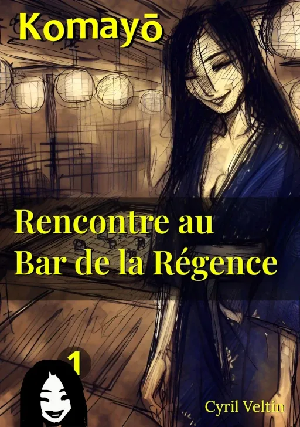

Rencontre au Bar de la Régence

ISBN : 978-2-9589581-0-7
Préambule
Il existe des histoires qu'on hésite à partager, non par peur d'être jugé, mais parce qu'elles nous changent si profondément qu'on peine à reconnaître celui qu'on était avant. Le témoignage de Yoshirō est de celles-là.
À quarante-deux ans, il menait une vie sans surprise dans les bureaux d'Osaka. Un emploi stable, un appartement fonctionnel, une routine bien huilée - le genre d'existence qui ne fait pas de vagues. Certains appellent ça la sagesse, d'autres la résignation.
Mais un soir de septembre, las des heures supplémentaires et des dossiers qui s'accumulent, il accepte l'invitation d'un collègue. Une décision anodine, presque insignifiante. Le Bar de la Régence n'est après tout qu'un établissement parmi tant d'autres, niché dans les artères animées de la ville.
Ce qui s'y est passé cette nuit-là, Yoshirō nous le raconte avec ses mots. Son récit est celui d'un homme qui découvre, parfois douloureusement, que la vie peut encore nous surprendre quand on croyait avoir tout vu.
Extraits choisis
La première rencontre
À peine perceptible au début, une fragrance subtile vint chatouiller mes narines, me figeant sur place. Un mélange de fleurs nocturnes et de bois précieux qui éveilla en moi des sensations étranges, comme un souvenir fugace qui m'échappait. D'instinct, je tournai la tête, mon verre s'inclinant dangereusement. Une silhouette aux longues manches tombantes venait d'apparaître, se dirigeant vers le comptoir. Mon regard suivit sa démarche, captivé par l'ondulation du tissu orné de motifs chatoyants. Les secondes s'étirèrent tandis qu'elle naviguait à travers la foule avec une grâce surnaturelle, contrastant fortement avec l'énergie juvénile de mes compagnes de table. Chacun de ses mouvements semblait chorégraphié et mesuré, comme si elle flottait au-dessus du sol.
Le jeu mystérieux
Ses doigts effleurèrent les pièces claires avec une délicatesse presque érotique. Puis, d'un geste inattendu, elle commença à les retirer de l'échiquier. Stupéfait, je la regardai ôter une à une ses pièces blanches, jusqu'à ce qu'il ne reste plus que sa dame. Je m'apprêtai à l'interroger, mais elle m'imposa le silence d'un doigt sur ses lèvres, son sourire énigmatique promettant mille secrets. De la manche de son kimono, elle extirpa un petit sac en soie brodée, dont le contenu se révéla être des pièces en bois laqué.